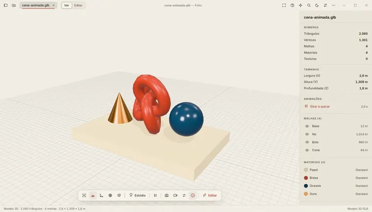

Abra qualquer arquivo.
Um app só, gratuito, para os mais de 300 formatos que chegam até você: do Word e do PDF ao vídeo e ao modelo 3D. Sem instalar o Office nem um programa para cada coisa.
Usa outro sistema? Veja todas as versões.
O Folio é um app para computador. Mande o link para você mesmo e baixe no Windows, no Mac ou no Linux.


Cada arquivo abre do jeito certo
O Folio reconhece o tipo do arquivo e mostra o visualizador feito para ele. Estas são telas reais do app.
Documentos do Word
Cabeçalho, tabelas, listas e fontes aparecem como no Word, para ler e editar, num computador sem o Office.
.docx, .doc, .odt, .rtf, .pages

Planilhas
Fórmulas calculadas, moeda, porcentagem e cabeçalho congelado, como você deixou no Excel.
.xlsx, .xls, .ods, .csv, .numbers

Apresentações
Slides, anotações e o botão Apresentar, em tela cheia, sem o PowerPoint.
.pptx, .ppt, .odp, .key

PDF
Leia, selecione o texto, anote e assine. Dá para apresentar o PDF como slides.
.pdf, .xps, .djvu

Vídeos e músicas
Assista e ouça sem procurar codec. Os controles ficam no lugar de sempre, com velocidade e repetição.
.mp4, .mkv, .avi, .mov, .mp3, .wav, .aiff

Modelos 3D
Gire, aproxime e veja medidas, malhas e materiais de cada peça.
.glb, .gltf, .obj, .stl, .fbx, .3mf

Código e pastas compactadas
Código com cores por linguagem, e .zip, .rar e .7z abertos como pasta, sem extrair tudo antes.
.py, .js, .ts, .json, .zip, .rar, .7z

Assistente de IA, se quiser
Use o Claude ou o ChatGPT da sua conta para resumir, reescrever e converter o arquivo aberto. Desligado até você ligar.
Estúdio criativo
Edite imagens, vídeos e músicas, crie animações e converta entre formatos sem sair do app.
Baixar o Folio
Versão para
Windows 10 e 11
Baixar para Windows- Abra o arquivo baixado e clique em Extrair tudo.
- Na pasta extraída, clique duas vezes em Instalar. Não pede senha de administrador.
- Se aparecer O Windows protegeu o computador, clique em Mais informações e depois em Executar assim mesmo.
Outros sistemas
Escolha um para ver como instalar, ou baixe direto.
Ver detalhes técnicos
Os links levam sempre à versão mais recente. Depois de instalado, o Folio avisa quando houver versão nova.
- Confira a integridade com o arquivo SHA256SUMS da versão.
- No Ubuntu pelo terminal:
sudo apt install ./Folio-linux-amd64.deb - Todas as versões e notas: página de versões no GitHub.
Seus arquivos ficam com você
O Folio abre e edita tudo no seu computador e não coleta dados de uso.
- O assistente de IA só manda o arquivo aberto quando você pergunta algo a ele.
- Se der um erro, o Folio pergunta antes de enviar um diagnóstico e mostra tudo o que vai.
- As atualizações chegam sozinhas, e você escolhe quando instalar.
- Este site não usa cookies nem contador de visitas. Ele só consulta o GitHub para mostrar a versão mais recente.